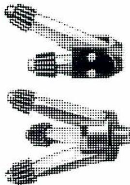
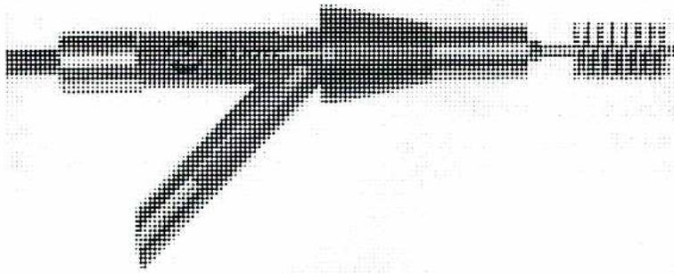

Boiler and Steam Generator Maintenance and Inspection
4
Learning Outcome
When you complete this learning material, you will be able to:
Describe in detail the typical procedures for boiler maintenance and inspection.
Learning Objectives
You will specifically be able to complete the following tasks:
- 1. Describe the mechanical cleaning procedures for a boiler including safety precautions.
- 2. Describe the detailed chemical cleaning procedures for a watertube boiler including safety precautions.
- 3. Describe the detailed hydrostatic testing procedure for a boiler including safety precautions.
- 4. Describe standard shutdown activities and preventive maintenance procedures required for a boiler.
- 5. Describe the detailed procedure for complete inspection of a boiler including water side, fireside, and auxiliary equipment.
- 6. Describe boiler inspection techniques and equipment.
- 7. Describe the required inspection records and reporting procedures.
- 8. Describe the roles and responsibilities for an inspection including engineering staff, operators, and boiler inspector.
- 9. Describe the safety requirements during a boiler inspection.
Objective 1
Describe the mechanical cleaning procedures for a boiler including safety precautions.
Successful operation of a boiler depends on continuous and adequate maintenance and periodic inspections to determine the condition of the boiler and its auxiliaries.
This module deals primarily with natural circulation boilers but most procedures apply to other boiler designs.
After the boiler has been shut down, drained, and cooled, it is prepared for inspection and cleaning. This involves blinding off all water, steam, and chemical connections for the waterside of the boiler and all gas connections for the furnace. Blinding a pipeline involves separating the pipe at a joint and installing a solid blank flange or a piping cap. If blinds cannot be used, then a double block and bleed system of isolation is used.
Before cleaning the internal surfaces of the drums, tubes, and headers, the surfaces are examined to determine how effectively the feedwater and boiler water treatment prevents scale formation, sludge, and corrosion.
When someone enters the boiler drum, a vessel safe entry procedure must be used to ensure the safety of those entering the drum.
After the visual examination, the internal surfaces are cleaned with high-pressure water. The high-pressure water removes loose deposits and some of the scale adhering to the surfaces.
During the wash down, the blowoff line should be disconnected and the water allowed to run to waste to prevent scale from plugging the blowoff valves and piping.
Any deposits that were not removed with the high-pressure water are removed by mechanical or chemical cleaning.

This image shows two mechanical cutter heads used for cleaning boiler tubes. The top head is a two-arm model, and the bottom head is a three-arm model. Both consist of a central hub with multiple articulated, spring-loaded arms extending outwards. Each arm terminates in a cutting head designed to scrape deposits from the tube's inner wall.
Figure 3
Two and Three Arm Cutter Heads
Fig. 3 illustrates a two and a three arm cutting head. The swing arms are spring loaded, keeping the cutting heads in contact with the tube surface. They are used for tube sizes from 5 cm. to 7.6 cm. and bent tubes on a 15 cm. minimum radius.
Firetube Boiler
Firetube boiler cleaning tools, such as the one in Fig. 4, are used to clean soot deposits from the inside of the tubes. It is a pneumatically actuated cleaning tool that moves inside the tubes at 5 meters per minute. It scrubs the inside of the tube with a pulsing action.

This image depicts a firetube cleaner tool. It features a long, slender cylindrical body. At one end, there is a cleaning head with a rotating brush or scraper assembly. The other end is connected to a pneumatic motor, indicated by a series of longitudinal ribs and a rearward extension. The tool is shown at an angle, illustrating its profile for insertion into a boiler tube.
Figure 4
Firetube Cleaner with Air Driven Motor
After the mechanical cleaning is done, the tubes can be flushed out or high-pressure jetted to remove any loose scale that was removed from the tube side walls by mechanical cleaning.
Mechanical cleaning methods are used mostly on firetube and small watertube boilers. In terms of time and personnel, mechanical cleaning of large boilers is very expensive and does not always clean the surfaces adequately.
Objective 2
Describe the detailed chemical cleaning procedures for a watertube boiler including safety precautions.
CHEMICAL CLEANING
Many of the internal surfaces of modern boilers cannot be thoroughly cleaned by mechanical means. Chemical cleaning is the most efficient method of cleaning the internal surfaces of boilers of all sizes and designs. It has the following advantages compared to mechanical cleaning:
- • Less time and fewer maintenance personnel are required. Even a large unit can usually be cleaned in less than 36 hours.
- • Inaccessible areas can readily be cleaned and the cleaning is more thorough than with mechanical cleaning.
- • With chemical cleaning, boilers can be designed without special provisions for mechanical cleaning accessibility.
Chemical cleaning involves washing the boiler internal surfaces with a solvent and then flushing with clean water. The unit is then treated with a neutralizing and passivating solution and flushed once again with demineralised water.
Before chemical cleaning begins, the unit must be prepared by isolating all parts not to be cleaned from the rest of the unit. This is done with valves, blinding off connections, or filling sections of the boiler, such as the superheater, with demineralised water. All valves with bronze and brass parts are removed, so that they will not be corroded by the ammonia that is used as a neutralizer. Gauges and meters are isolated from the unit. Vents are opened to remove any acid vapours formed.
The type of acid used depends upon the type of deposit to be removed. An inhibitor is added to prevent the acid from reacting with the boiler metal. The inhibitor loses its effectiveness above a certain temperature; therefore the temperature of the acid solution must be monitored. The temperature limit of the inhibitor is available from the manufacturer.
Calcium carbonate and other hard adherent scales are removed from low-pressure boilers. In high-pressure boilers, the major deposits are magnetite and copper. Ammoniated citric acid with an oxidizing agent such as sodium nitrate or bromate is used to remove magnetite and copper. Mild hydrochloric acid (5% acid/water solution) is also used. Qualified personnel supervise the chemical cleaning. Often a specialized cleaning company does the chemical cleaning. Careful chemical control is necessary
After the unit is removed from service, it is cooled and then drained. If there is a superheater section, it is filled with demineralised water and pressurized with nitrogen. The rest of the boiler is filled with demineralised water through the filling connection 1. While the boiler fills, air is vented through the vents 2. The water is circulated through valve 7 using a chemical-cleaning pump. Low-pressure steam is admitted through connection 3 in order to raise the temperature of the circulating water. The chemical solution with the inhibitor is then admitted through connection 4 to give the required concentration in the circulating water.
During the cleaning, the required temperature (approximately 100°C) is maintained, and the vents are opened frequently to remove any hydrogen gas accumulations. Samples of the circulating solution are taken every half-hour and analysed. The solution is analysed at point 8 to ensure proper chemical strength and at point 9 to determine the quantity of magnetite and copper being removed.
When sample analysis from point 9 determines that cleaning is complete, the chemical cleaning pump is stopped and the cleaning solution is removed from the unit. Valve 5 is closed and valve 6 is opened while demineralised water is admitted through valve 1.
When the cleaning solution has been displaced, the demineralised water is circulated using a chemical cleaning pump, and ammonia and hydrazine are added to provide a neutralizing solution. Ammonia serves to elevate the pH to avoid acid corrosion, and hydrazine scavenges any oxygen admitted and passivates the metal. This neutralizing solution is heated and circulated for two hours and all vents, drains, superheater piping, and dead-end piping is flushed out.
The neutralizing solution is then drained and replaced with demineralised water. The final step is to add more ammonia and hydrazine to the water and circulate the solution for a minimum of one hour.
Soaking Method
Fig. 6 illustrates an arrangement for chemical cleaning of a boiler using the soaking method.
To prepare the unit for soaking, thermocouples should be installed at the steam drum, at the centre of each furnace wall, and at one of the lower furnace wall headers. To soften the scale, the unit is then filled with demineralised water and brought up to a temperature of 77 - 82°C with pilot burners or light firing. Once the desired temperature is reached, firing is stopped and the unit is drained. The superheater is backfilled with treated condensate or demineralised water to prevent acid vapours from entering during the cleaning.
The drum gauge glass is replaced with a plastic tube gauge. Then, referring to Fig. 6, the vents 5 and valve 1 are opened and the filling pump is started. Heating steam is admitted through valve 6 to keep the water flowing to the unit at 77 - 82°C and the chemical is admitted through valve 7. The amount of acid entering is adjusted to give the desired
Then the unit is completely filled using the filling pump until water overflows through the vents 5. This ensures the removal of acid vapours from the drum. The unit is drained under nitrogen pressure and the fill and flushing step is repeated. The unit is again drained under nitrogen pressure and the pH of the rinse water is tested. If the pH is below 5, the fill and flushing step must be repeated.
If the pH is satisfactory, the next step is to neutralize the surfaces. The temporary gauge is replaced by the regular drum level gauge, and the unit is filled to slightly below operating level with a solution of 10 kg of soda ash to 100 kg added to the water. The unit is then fired and boiled out for 4 to 6 hours. For boilers operating at 1400 kPa or less, the boilout pressure is at operating pressure. For boilers operating at above 1400 kPa, the boilout pressure is the higher of 1400 kPa or one half the operating pressure although it is not necessary to exceed 4200 kPa.
After the boilout, the steam generating unit is shut down and drained without using nitrogen pressure. While the unit is still hot, it is filled with demineralised water (0.5% sodium nitrite or a hydrazine solution to prevent rusting) until the drum vents overflow. The steam generating is drained again after one hour. On inspection, if there is any evidence of loose deposits remaining in the unit, the headers and tubes should be thoroughly flushed out.
Objective 3
Describe the detailed hydrostatic testing procedure for a boiler including safety precautions.
The purpose of this test is to prove the boiler is tight (leak free) and will withstand operating pressures. A boiler manufacturer or repair company carries out the test to the satisfaction of an authorized boiler inspector. This person is a provincial government boiler inspector, an insurance company boiler inspector, or a qualified employee of the company purchasing the boiler, depending upon the regulations in the province concerned. If repairs were made by the boiler owner, then the owner may conduct the test.
Boilers that have undergone pressure part repairs or have been out of service for an extended period of time are subjected to a hydrostatic test. All tubes must be proved clear of obstruction before the hydrostatic test can be carried out. To prove each tube clear someone must enter the boiler drum. Therefore a vessel safe entry permit must be obtained.
Note: Before any personnel begin to prepare the boiler for the hydrostatic test, ensure that all work permits are returned to the operations department and that all tools are removed from the boiler.
Straight tubes can be sighted through with a portable light. Bent tubes can be proved clear of obstruction by passing a wooden ball through. Compressed air can be used to blow the ball through the tubes. Alternatively, a fish wire, followed by a rope and a canvas plug can be pulled through. Whichever method is used, it is essential that all tubes be proved clear, and protected against the possibility of any debris falling into them until the boiler is closed.
When all tubes have been probed and all headers and drums have been mechanically cleaned (this includes use of the mechanical tube cleaners where necessary), the boiler is closed in preparation for the hydrostatic test.
To prevent sediment and dirt entering the safety valves, the valves are removed and the connections are blinded. It is not good practice to gag the valves against such a high pressure, because they may be damaged as a result.
Be sure to isolate any instruments that could be damaged by the hydrostatic pressure. Allow only essential personnel in the immediate area of the boiler during the time that the hydrostatic test pressure is applied.
Objective 4
Describe standard shutdown activities and preventive maintenance procedures required for a boiler.
SHUTDOWN ACTIVITIES
A new boiler is often shut down for an initial inspection after the first few months of operation depending upon the manufacturer's recommendations. The following routine inspection is typical of items checked:
- • Dismantle internal baffles as necessary and examine all drums and headers for dirt, oil, scale, or sludge
- • From the furnace side of the boiler visually inspect the tubes for signs of overheating. Signs include bulges or blisters. A portable light is helpful for finding tubes that are not straight.
- • Pass a scaling tool through all tubes that are exposed to radiant heat and run horizontally for any portion of their total length
- • Examine casings and insulation: cut additional clearances where necessary, replace any dislodged tiles after rectifying the cause of the disturbance, and repack damaged expansion joints
- • Examine all gas baffles and seals
- • Examine sootblowers for easy movement and for accuracy of travel
- • Inspect all flanged joints on boiler and high-pressure piping for leakage and tighten the joints as needed
- • Check damper operating gear. Check damper positions in comparison to indicator gear adjustments
raw water characteristics or a change to the feedwater treatment program, the waterside of the boiler is drained and an internal inspection carried out.
Steam purity tests are carried out to verify the condition of the steam separating equipment. If the steam purity is within design specifications, the steam separating equipment is probably in good condition.
When the steam purity tests are not within design specifications there is probably a foaming or mechanical separation problem. If moisture carry-over with the steam is enough to affect the final steam temperature, the boiler should be shut down for inspection of the internal baffles and fittings.
Internally, the following observations should be made:
Examine the steam and water drums for indications of the normal working water level
Examine the internal baffles, particularly the ones adjacent to riser tube ends, and seal off all open joints or other crevices through which water may be ejected into the steam space
- • Make sure that all internal drains are free from sludge or scale and are able to discharge freely
PREVENTIVE MAINTENANCE (PM)
General maintenance and repair is the maintenance done on a regular basis to keep the boiler running between scheduled annual or biannual outages. It includes such items as:
Oil filter changes on auxiliary equipment such as boiler feed and circ pumps
Inspecting and repairing items external to the boiler such as valves, fittings, gauge glasses
Strange sounds, leaks, are investigated and repairs made
Preventative maintenance is the kind that prevents problems like leaks and bearing failures from occurring. It is done at planned intervals when the equipment is operating in a normal fashion. Preventative maintenance is based upon:
Manufacturer's recommendations for preventative maintenance
Operating experience with the specific equipment involved
Judgement based on experience with similar equipment
The purpose of preventative maintenance is to eliminate equipment failure and unscheduled downtime. The PM intervals are based mostly on experience. For example, if a turbine or pump bearing has been inspected every year for several years with no change noted, the time interval may be increased to two years. If a piece of equipment has been failing, the interval time will be shortened.
Objective 5
Describe the detailed procedure for complete inspection of a boiler including waterside, fireside, and auxiliary equipment.
WATERSIDE INSPECTION
Before cleaning the internal surfaces of the drums, tubes, and headers, they should be examined by the plant inspection personnel and staff involved in the water treatment programmes to determine the effectiveness of the feedwater and boiler water treatment programs. The condition of the drums and heating surfaces are documented with photographs to update the inspection records. The water treatment company representative will also want to inspect and make recommendations.
After the inspection, the internal surfaces may be washed as required. The tubes can be high pressure jetted to remove deposits and some of the scale adhering to the surfaces. Drums and headers can be flushed out. During the washing down, the blowoff line should be disconnected and drained to waste to prevent scale from plugging the blowoff valves and piping.
Mechanical cleaning or chemical cleaning removes any deposits still adhering to the surfaces after washing down. This leaves a clean metal surface that the inspector can easily examine.
Note: Some boiler designs can be inspected visually. The cleanliness of heating surfaces is not always obvious from the inspection of drums and headers. In high-pressure boilers with complex water circulation circuits and all-welded construction, adequate visual inspection may not be possible. Fibre optic viewing devices may be run through the tubes to view their condition. In some cases it may be necessary to cut out a representative tube sample in order to determine the amount of deposit present. The tube sample can be cleaned with a mechanical cleaner. The amount of deposit removed from the sample is weighed.
When examining the waterside surfaces, the inspector looks for signs of corrosion, pitting, and cracks in the metal. Cracks may appear in ligaments between tubes. Stays must be checked for tightness and cracking at the fastened ends. Particular attention is paid to drum connections such as safety valves and steam outlet connections and to manhole and handhole openings. All drum welds are examined. A magnetic particle inspection can be used to check for cracks in drums and headers.
Corrosion of tubes and support brackets may take place in high temperature sections, such as the superheater, especially if oil containing vanadium is used as the boiler fuel. Prolonged contact with ash and areas where ash deposits remain may cause corrosion, so they should be cleaned and checked. Correct alignment of tubes is checked because warped tubes or broken or displaced brackets, hangers, or spacers could cause misalignment. If any misalignment is not corrected, sootblowers can erode the tube surfaces.
All dampers and air registers should be checked for defects and freedom of movement. Burners should be examined for signs of carboning, coking and indication of overheating. Coal handling equipment such as pulverizers and feeders is inspected to ensure there are no worn or broken parts.
AUXILIARY EQUIPMENT
- • Change oil in the pump, fan, and pulverizer bearings.
- • Inspect the pump and fan bearings for wear and replace as required.
- • Check the operation of the fan louvers to ensure they are working properly. Ensure the louvers are not cracked or broken.
- • Conduct a thorough inspection of the bottom ash and fly ash handling systems for wear and damaged parts and make the required repairs.
- • If the boiler is coal-fired, check the coal supply equipment for wear and broken parts, and make the required adjustments and repairs.
Objective 6
Describe boiler inspection techniques and equipment.
There are various techniques and types of equipment used to inspect boiler tubes, headers, and drums. Visual inspection is the technique used to assess overall condition and to select areas where more non-destructive tests may be required. Tubes are carefully viewed for signs of bulging and hotspots. Any changes from normal are carefully noted. A portable light is often used to check the straightness of walls. Portable callipers can be used measure tube diameters. The types of tests discussed here are radiographic examination, ultrasonic inspection, thermal radiation, liquid penetrant inspection and magnetic particle inspection.
LIQUID PENETRANT TESTING
Liquid penetrant testing is used to detect surface cracking. It is not dependant on the magnetic property of the component or its shape. LP testing detects surface flaws by capillary action of liquid dye penetrant. It is only effective if part of the flaw is touching the surface. The penetrants are portable and easy to transport into a boiler drum. The fluids are contained in aerosol cans. The test makes it much easier to see cracks than with the naked eye. Cleaning of the surface is required before applying the chemicals. The operator must be trained and have practice using the LP Test.
MAGNETIC PARTICLE TESTING
Magnetic particle testing is very useful at detecting flaws, such as cracks, in pressure vessels, drums, and headers. It applies a magnetic field to the test piece. Iron particles are placed on the surface of the area to be tested. Flaws appear in the pattern of the iron particles. Because a magnetic field is used in the test, it is only used on ferrous materials.
A disadvantage of the test is that the depth of the flaw is not known. It may be deep or just a surface crack. When the crack has been found it is often necessary to use X-rays or surface grinding to ascertain the extent of the crack.
RADIOGRAPHIC EXAMINATION
Gamma radiation exposure devices and x-ray film are used to determine the wall thickness of boiler tubes and the condition of various welded joints in boiler drums, headers and piping. The film is wrapped around the area to be x-rayed and a picture is taken of the tube or weld.
This is the most common method used to inspect the condition of the various welded joints in a boiler. It is commonly used during construction of a boiler and piping system.
Objective 7
Describe the required inspection records and reporting procedures.
Regulatory authorities, owner inspection programs and insurance companies require inspection records for boilers and pressure vessels. Each boiler must have an accurate record of every inspection since it was first commissioned. Although the inspection reports for different agencies and insurance companies will vary, the following information is on most boiler inspection records:
BOILER INSPECTION RECORD
- • Boiler manufacturer
- • Canadian registration number (CRN)
- • Year built
- • Boiler capacity
- • Maximum operating pressure
- • Date of each inspection
- • Name of boiler inspector
- • Condition of waterside and fireside of the boiler at the time of each inspection. If tubes are damaged, the tube number is listed
- • Cleaning procedure used each time boiler was cleaned
- • Inspector's comments
- • Inspector's requests for repair
- • Any unusual conditions that were noted during inspection
- • Any pictures taken during the inspection of the boiler
The boiler operator has a permanent log sheet for each boiler. Readings are taken at regular intervals (4 to 6 hours) and the log sheet has the following type of information:
- • Time
- • Boiler pressure
- • Final steam temperature
- • Steam flow
- • Rate of feedwater flow (where indicated)
- • Draft readings at boiler, economizer, and air-heater exits
- • Feedwater inlet temperature
- • Air temperature entering the air heater
- • Gas temperatures at boiler, economizer and air-heater exits
- • Forced and induced draft fan loads (or speeds, if variable)
- • Data on fuel supplies (enough to give an indication of the rate of consumption)
- • Furnace stack emissions
- • And other data inspectors, owners or insurers deem relevant
In many plants, an electronic data acquisition system automatically compiles and electronically stores these readings for retrieval in the future. These systems store many more readings and different variables than manual systems.
Space should also be provided to indicate time and duration of sootblowing, blowing down, water-dosing (when applied internally to individual boilers), and ash removal. A list of personnel responsible for the operation of the plant while the observations are recorded is kept. The boiler-house log should be reviewed regularly and day-to-day observations compared. Record any departure from routine conditions.
Complete records of boiler water conditions should also be kept. This may involve separate records kept in the water treatment area or in the plant's water testing lab. The records should reference the person doing the samples, the time of the samples, and the actions taken.
After a turnaround the inspection reports are commonly reviewed by plant engineers and inspectors. They use the reports to plan work for the next turnaround. They may also want to change the inspection intervals of boilers or pressure vessels. The safety codes officer for the area will also want summaries of the reports to update his records.
If a serious incident occurs that affects the integrity of the boiler, the chief engineer must be notified immediately. The chief engineer immediately notifies the boiler inspector (or safety codes officer, depending upon the jurisdiction). The incident scene must remain undisturbed until the boiler inspector and the insurance company have completed their investigations. Company inspectors may also want to inspect and investigate.
If the incident involves a personal injury or fatality, then regulatory occupational health and safety authorities are also notified immediately and may conduct their own
Objective 8
Describe the roles and responsibilities for an inspection including engineering staff, operators, and boiler inspector.
ENGINEERING STAFF
The role of the engineering staff is to provide engineering support to the boiler inspection team if the integrity of a pressure part such as a tube is questionable. For example, if a section of tube appears to be corroded or if there is severe pitting, it is the engineer's responsibility to determine that tube wall thickness is still greater than the minimum allowable thickness for the operating condition.
Engineers serve as project managers for any capital projects or large repairs. If changes to piping systems or pressure vessel repairs are planned, qualified professional engineers submit repair procedures to the regulatory agency in the province. The engineering drawings are stamped by the professional engineer. The accepted engineering drawings are then used by the tradesmen to order materials for the jobs. Copies of the drawings are also sent to the chief power engineer for his records, and to help plan for the work.
Prior to an extended shutdown, engineers assist with the shutdown planning, parts and materials procurement, and labour scheduling. During the shutdown the on-site engineering staff does engineering that arises from the inspections or repair jobs. If repairs are required to boilers or registered pressure vessels or piping systems, the engineering staff writes up a repair procedure. They are in contact with the local inspector. He may wish to see the repairs procedure, or allow the repairs to proceed. Most plants have "owner user programs" that specify which types of repairs can be done on site without submitting a repair procedure.
The engineering staff has day to day communication to the tradesmen and operations personal, updating them on the status of all work requiring engineering such as repairs and capital projects.
OPERATIONS STAFF
The operations staff must familiarize themselves with the type of inspection to be carried out. Operations manage and coordinate procedures for required work permits and confined space entry permits.
For example, if a complete furnace and waterside inspection is to be carried out, the boiler must be completely isolated and made ready for entry. If only the furnace is to be
The boiler inspector makes his recommendations to the chief steam engineer. He often checks the settings on the safety valves and may ask to view the setting of the valves. Once all the safety valves have been set, the inspector may check the seals on each safety valve. The valve servicing company is usually involved in setting the safety valves and installing the seals.
Often insurance inspectors conduct their own inspection of boilers. They may also make recommendations for repairs or improvement in operating procedures. Their recommendations are based on accidents or failure of boilers. The recommendations often include things like operating procedures, or settings and testing of trip systems.
Objective 9
Describe the safety requirements during a boiler inspection.
BOILER INSPECTION SAFETY REQUIREMENTS
During a boiler inspection, the following safety precautions must be followed:
- • Drum and boiler must be cool and well ventilated. Areas such as thick drum and refractory take many hours to cool. Oxygen tests must be carried out before and during each inspection.
- • Valves must be closed, locked, and tagged to prevent steam, water, fuel or other substances from entering the boiler. Blinding or double block and bleed are the preferred methods of isolating flows.
- • Draft fans and feedwater pump motor circuit breakers must be locked out and tagged. Each person entering the boiler may put his own lock on the breaker.
- • Only low voltage lighting should be used. Portable electrical equipment used in the steam generator should be adequately grounded.
- • An approved vessel safe entry procedure must be used for the safety of the workers entering the boiler drums, furnace or any other part of the boiler setting. A safety watch person stands watch outside the boiler while inspectors are inside.
- • Overhanging slag and other deposits should be dislodged by bars or rods operated from outside the setting before personnel are allowed to enter the boiler
- • Any hazardous materials used in boiler construction, insulation or cleaning must be identified and either removed or procedures and equipment put in place to deal with them. Examples include insulations that contain fibres, ash and refractory dust, and cleaning solvents.
Chapter Questions
A3.4
- 1. List the advantages of chemical cleaning versus mechanical cleaning.
-
2. (a) What are the two types of chemical cleaning methods for boilers?
(b) Describe in detail how to chemically clean a boiler using one of the above methods. - 3. Describe how to conduct a hydrostatic test on a boiler, including safety procedures.
- 4. What is the purpose of a Preventive Maintenance (PM) program?
- 5. Describe how to conduct the inspection for the waterside of a boiler.
- 6. Describe the information that a boiler log sheet should contain.
- 7. Describe the roles and responsibilities of engineering staff in regard to boiler inspection.
- 8. Describe one of the non-destructive inspection techniques used for a boiler.
- 9. List 4 of the safety requirements during a boiler inspection.